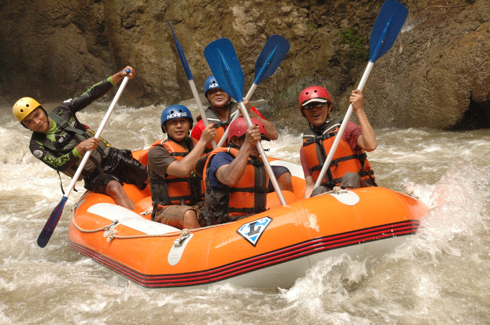

Bem-vindo à Rio Abaixo Rafting — sua porta de entrada para as águas mais emocionantes do Rio de Janeiro. Guias experientes, equipamentos de segurança e aventura inesquecível te esperam.
Ver Nossos Passeios
Sinta a Força do Rio
Por que Escolher a Rio Abaixo?

Guias Certificados
Nossa equipe é formada por guias com certificação internacional e anos de experiência nas corredeiras do Rio de Janeiro. Sua segurança é nossa prioridade.

Equipamentos de Ponta
Utilizamos coletes salva-vidas, capacetes e botes de última geração, inspecionados regularmente para garantir máxima proteção em cada descida.
Pronto para a Aventura?
Explore todos os nossos pacotes de passeios — do nível iniciante ao avançado — e reserve sua experiência hoje mesmo.
Conhecer os Passeios